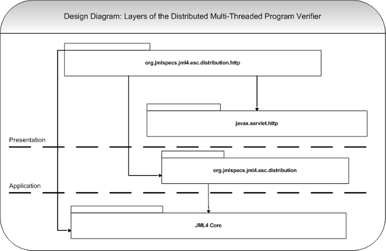

JML4Disco: A Distributed, Multi-Threaded Verification of Java Programs
Table of Contents
- Distributed Components
Distributed Components
The Prove-VCProgram Servlet (The Dispatcher)
This Servlet is a remote server which receives a VCProgram object via HTTP POST request, breaks it up into individual VCs and proceeds to dispatch these individual VCs to prover-servers.
High-Level Design
The Dispatcher is layered as follows: in the topmost layer, the presentation layer, Java Servlets serve to marshall and demarshall the information in Http messages passed from Client or Prover-Server to Dispatcher. In the layer just below, the application layer, are classes relevant to the logic of distributing program verification. Beneath the application layer is the Domain layer, which contains classes pertinent to the verification itself. The following is a simple (deliberately incomplete) diagram to convey the layers with some of the more relevant classes they contain shown, followed by a more complete, intricate class diagram. 
{kind=link}
Class Diagram
{kind=link}
The Classes (Dispatcher Server)
The following classes are used in the implementation of the Dispatcher.
- VcProgram <servlet> - This class is essentially responsible for de-marshalling messages received from a Client. As a servlet, it receives messages from a Client in the form of Http requests, which include Java-Serialized VcProgram objects. These VcProgram objects are then passed to the VcProgramDispatchingServer.
- VcProgramDispatchingServer <metaclass> - While another class is exclusively responsible for de-marshalling VcPrograms objects received in a message, this class serves as a Facade to the rest of the Dispatching functionality.
- AbstractRemoteServer - The AbstractRemoteServer provides some basic functionality and describes the interface for classes which will represent the protocol details involved in sending a message to a remote ProveVc Server.
- RemoteTomCatServer - An implementation of abstract class AbstractRemoteServer, RemoteTomCatServer sends a Vc object to a remote server using HTTP protocol, expecting that remote server to be running Apache TomCat. At the end of Milestone 4, this is the only existing implementation of AbstractRemoteServer.
- ServerQueue - This implementation of Java standard interface java.util.Queue encapsulates the logic behind load balancing. The Dispatcher only sees a queue which gives it the instance of AbstractRemoteServer most capable of receiving and responding to a message.
- ServerQueueFactory - In the event that the implementation of ServerQueue changes, the ServerQueueFactory reduces coupling.
- ServerComparator - This class contributes to how the ServerQueue class chooses the instance of AbstractRemoteServer most capable of receiving and responding to a message.
- IServerProfile - Instances of AbstractRemoteServer receive IServerProfile objects as part of the responses they get from the remote machines they communicate with.
- ProveVc <servlet> - This class is essentially responsible for de-marshalling messages received from a Dispatcher. As a servlet, it receives messages from a Dispatcher in the form of Http requests, which include Java-Serialized Vc objects. These Vc objects are then passed to the ProveVcServer.
- ProveVcServer <metaclass> - While another class is exclusively responsible for de-marshalling Vc objects received in a message, this class serves as a Facade to the rest of the proving functionality.
Interaction Diagram
Significant Changes
While still based on the original prototype, the latest implementation has been heavily refactored to incorporate a more scalable and maintainable design.

Relevant Components
- prVcProg:ProveVcProgram - Servlet which recieves a VCProgram via an HTTP POST request and dispatches that VCProgram's VCs to be proven concurrently by remote provers.
- HttpServletRequest - Instance of Apache TomCat interface javax.servlet.http.HttpServletRequest.
- HttpServletResponse - Instance of Apache TomCat interface javax.servlet.http.HttpServletResponse.
- reqIn:ObjectInputStream - Standard Java class java.io.ObjectInputStream which - within the scope of this example - reads from the InputStream provided by the HttpServletRequest object. The data is read out of an HTTP POST request, sent by the client.
- respOut:ObjectOutputStream - Standard Java class java.io.ObjectOutputStream which - in the scope of this example - writes to the OutputStream provided by the HttpServletResponse object. The data written to the OutputStream will eventually be written to an HTTP response.
- ProveVcProgramServer - A 'Static class' meant to act as a facade to Prove-Vc-functionality, so as to separate proving logic from communication and marshaling/de-marshaling.
- RemoteProveVcServerQueueFactory - Since RemoteProveVcServerQueue is an abstract class so as to make the load balancing logic transparent, the factory allows us to instantiate the queues without strong coupling.
- RemoteProveVcServerQueue - An abstract class which will control load balancing logic. This class is abstract; concrete implementations will depend on the protocol being used to connect to a given Prove Vc Server. (see below)
- ProveVcThread - Not a Thread at all but an implementation of runnable, which contains encapsulates the logic for sending a Prove Vc Server a request asynchronously.
- ThreadPool - In the implementation there is no class 'ThreadPool.' Someone should change the diagram to make this object lifeline be an instanec of class java.util.concurrent.Executor named 'ThreadPool' for clarity.
Dispatcher - Load Balancing
Class ServerQueue encapsulates the load balancing. At the moment, it inherits the implementation of a java.util.PriorityQueue, though not the interface, via delegation; an instance of ServerQueue contains instance variable queue of type java.util.PriorityQueue to which it delegates most of its method calls.
The second instance variable of class ServerQueue is of type ServerComparator and is used by the java.util.PriorityQueue to ascertain the order in which AbstractRemoteServer objects should be in the queue.
At the end of Milestone 4, the load balancing is still very buggy, but difficult to test as the tests are being solved at high speeds despite poor load balancing. Before load balancing is perfected, we will need to write computationally heavier System Tests than those which have been provided to us.
Interaction Diagram: RemoteProveVcServer implementation RemoteProveVcTomCatServer
Coupling has been reduced by abstracting away the logic to connect to remote Prove VC Servers into RemoteProveVcServer (an abstract class) objects. In the event that future implementations don't use TomCat / Servlet implementations, changing from one platform to another should be easier. The following is an interaction diagram representing what happens when the Thread Pool executes a ProveVcThread using a RemoteProveVcTomCatServer implementation, sending an HTTP request to a remote machine, including a Vc.

Relevant Components
- ProveVcThread - Not a Thread at all but an implementation of runnable, which contains encapsulates the logic for sending a Prove Vc Server a request asynchronously.
- servReqIn:ObjectOutputStream - Standard Java class java.io.ObjectOutputStream which - in the scope of this example - writes to the OutputStream provided by the URLConnection object. When this ObjectOutputStream is closed, the data written to the OutputStream is written to an HTTP POST request.
- URLConnection - Standard Java class java.net.URLConnection that represent a communications link between the application and a URL, or in this instance, the remote VCProgram-Prover-Servlet ProveVCProgram.
- servRespIn:ObjectInputStream - Standard Java class java.io.ObjectInputStream which - within the scope of this example - reads from the InputStream provided by the URLConnection object. The data is read out of an HTTP POST request, sent by the remote Prove-VCProgram Servlet ProveVCProgram.
- ProveVC - This Servlet recieves a VC via an HTTP POST request and proves it using ESC4, JML4's static verification component.
The Prover-Server
The Prover-Server is a remote server which receives a VC object via HTTP POST request and proves it. (..)
Interaction Diagram
Minor changes; refactored so that the 'de-marshaling' of VCs from the Http Request remains in the Servlet while proving logic remains in a separate object, in the event that we move away from TomCat implementations.
Relevant Components
...
The Simplify and Isabelle Adapters
The adapters are objects that provide bridges between java jvm and theorem prover which are external processes. The adapters deal with the actual communication with the provers' process. In this milestone, the team has decided to change the internal behavior of SimplifyAdapter and IsabelleAdapter to avoid unnecessary creation/deletion of process every time the adapters are being called. This change will improve significantly the performance of proving.
Interaction Diagram
The below diagram shows the general behavior of creating new prover's process and how to maintain process' life in a long run. Note that the behavior shown in the diagram also applied to SimplifyAdapter.
{kind=link}
Relevant Components
- org.jmlspecs.jml4.esc.provercoordinator.prover.simplify.SimplifyAdapter
- org.jmlspecs.jml4.esc.provercoordinator.prover.isabelle.IsabelleAdapter
Boogie Components
Interaction Diagram
The following diagram shows the general behavior of the boogieVisitor. This diagram keeps a certain level of abstraction and will be broken down in later diagrams.
{kind=link}
Class Diagram
{kind=link}
Class Descriptions
Boogie
The Boogie object is a default compiler extension that enables the Java code to be passed through Boogie. For this to happen, there are two compiler options which must be enabled:
- jmlBoogieEnabled set to true
- jmlEscProverStrategy: "JML4BOOGIE"
Boogie's preCodeGeneration method is called by Eclipse's compilation mechanism before Java bytecode is generated for output. When the function is called, it passes down the compiler object as well as the compilation unit (the unit is the root AST node of a Java source file to parse) to the BoogieAdapter through the process function.
BoogieAdapter
The Boogie adapter is responsible for instantiating a BoogieSource object (which holds boogie source). The adapter translates from java to Boogie by calling the boogieVisitor visit function and passing the BoogieSource object to it. The adapter is then responsible for writing the source to a temporary Boogie .bpl source file and executing it through the boogie runtime.
BoogieParser
For now, there is a parser function called parseResult which resides in the boogie adapter. Error messages (results) from Boogie, return a column and row of where the mistake has occured. The parser is responsible parsing that msg and creating a BoogieSourcePoint. With the source point, it then uses the bougieSource getTermAtPoint function to map back to a particular AST node where the error originated from. Using the AST node the parser is now able to return an error msg to the problem reporter with the nth term where it occured. In the future, the Boogie Parser will be taken out of the Boogie Adapter.
BoogieVisitor
The Boogie visitor has all the node traversal methods. It uses the visitor pattern since when the the visitor's static visit method gets called by the adapter, it gets dynamically dispatched to the proper visit method. When a specific node is visited, the BoogieOutput passed from the adapter is appended with the newly generated boogie source.
BoogieSource
The BoogieSource object is responsible for holding boogie source code which will in tern be written to a temporary file and passed to Boogie runtime by the adapter. The object also holds a table called boogieTable which maps BoogieSourcePoints to particular AST nodes. It is necessary to have this mapping so that when boogie returns an error message with a particular BoogieSourcePoint ( a column and a row in the boogie source) we can map backwards to a particular AST node. This mapping occurs whenever Boogie source is appended.
BoogieSourcePoint
A Boogie Source Point holds a row and column. It also has a compare method. It primarily used by the BoogieSource object to map points in boogie to AST nodes.
BoogieSymbolTable
The BoogieSymbolTable class is used to map all local variable declarations to unique, scope independent symbol names. This is necessary because Boogie has only two scopes, global scope and local scope (procedure local). In addition to this limitation, all local declarations must be declared at the beginning of any procedure implementation before any other statements. A problematic scenario that illustrates the need for this component is as follows:
public void method() {
int x = 2;
if (true) {
int x = 10;
}
}
Without symbol passification, Boogie would be generated as:
procedure method() {
var x : int;
var x : int;
x := 2;
if (true) {
x := 10;
}
}
To solve this problem, symbols are uniquely generated starting from the symbol 'a', 'b', ..., 'z', 'aa', and so forth. The correctly generated Boogie using variable passification would be:
procedure method() {
var a : int;
var b : int;
a := 2;
if (true) {
b := 10;
}
}
BoogieVariableDeclFinderVisitor
The BoogieVariableDeclFinderVisitor class is used to group all local variable declarations in a method and emit them at the top of a MethodDeclaration before any statements are printed to the buffer. These variables are first passified using the BoogieSymbolTable described above.
Configuration Interface Components
Server Configuration Interfaces
Two new features will be added to the distributed component in the form of configuration interfaces for the server machines, meant to be used by an administrator. The implementation used will be a web application, implemented using Servlets running on a TomCat web server. As such, while the communication between remote machines during program verification may someday be able to move away from using Http to communicate, Dispatcher and Prover servers will always have to be deployed on web servers which include some Java web container, such as Apache TomCat.
Dispatcher Server's Web-Based Configuration Interface
A layered architecture will be used to develop the configuration interface. In the very top layer, Java Server Pages will render as views, and Java Servlets will receive Http requests and interface with the layer just below, the application layer. In the application layer there will be an interface-independent implementation of a Front Controller, as well as class definitions for Command objects. Below this layer will be the existing JML4Disco classes which will be configured.
Prover Server's Web-Based Configuration Interface
The design proposed for the Prover Server's Configuration Interface will be identical to that of the Dispatcher's. As such, classes and types common to both implementations should be reused.
Simplify and Isabelle Process Pool
From the previous milestone, we were able to improve significantly the performance of proving by limiting only one process per theorem prover. However, this does not take advantage of the full potential of multi-core systems. Hence, during this milestone, we will aiming to generate more processes for each theorem prover (specifically for Simplify and Isabelle ESC4) in a controlled way. The following class diagram shows the changes of the Isabelle and Simplify adapters as well as new classes necessary to implement this 'process pool' concept.
Class Diagram
{kind=link}
Whenever, the adapter needs a process, it asks for a idle process by calling ProcessPool object's getFreeProcess() method. Similarly, once the adapter is no longer needed for the holding process, it release it by calling releaseProcess(Process p) method.
ProcessPool object store a list of a given prover's processes. The available processes is created on the fly (as needed) until the number of created processes hits the maximum threshold. By default, the number of process allowed is the number of core on the host machine * 2.
Interaction Diagram